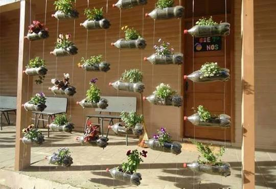
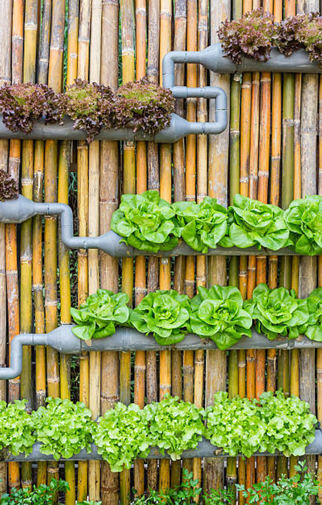
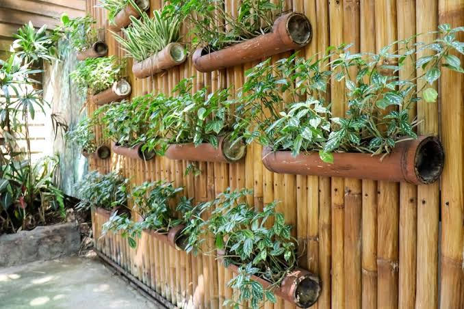
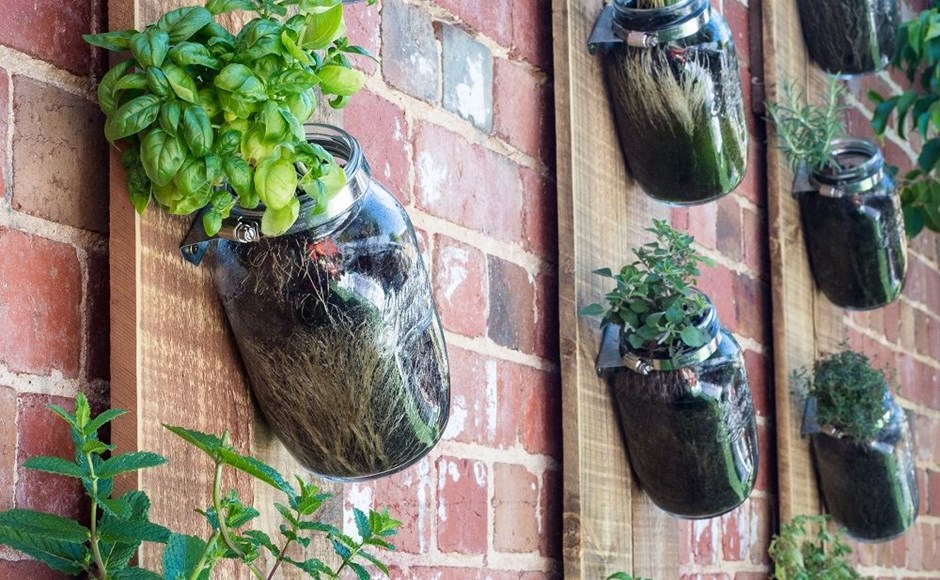
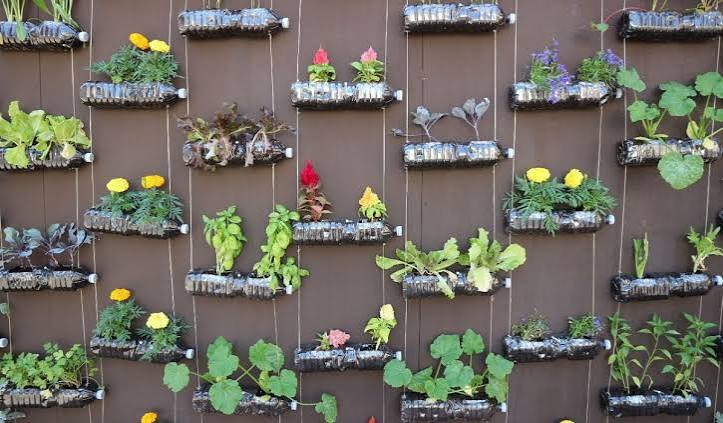
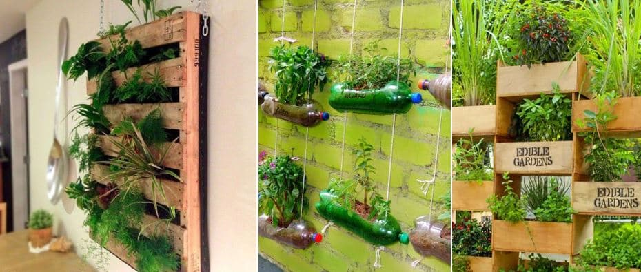

Macetas de colores hechas con PET N°1, con flores y hortalizas

Paneles, botellas colgantes y cajones de madera
Tubos reutilizados como macetas colgantes
Lechugas y hortalizas en canales reciclados
Se juntan botellas plásticas tipo PET N°1, las más reciclables del mercado.
Las botellas se cortan, pintan y transforman en macetas coloridas y llamativas.
Se montan como jardines verticales en el restaurante del barrio Ñuñoa.
Se agregan códigos QR con información sobre reciclaje y economía circular.
Iniciativa impulsada por el municipio de Ñuñoa, la Cámara de Comercio (CCTEÑ) y el Gobierno de Santiago para reducir a cero los residuos de más de 15 restaurantes del barrio. Green Voice se suma a este movimiento desde el restaurante La Finestra.
Av. Irarrázaval 3465 · ★ 4.4
Alc. Balbina Vera 3550 · ★ 4.9
Jorge Washington 111 · ★ 4.6
Dublé Almeyda 2900 · ★ 4.5
Manuel de Salas 71 · ★ 4.3
Jorge Washington 164 · ★ 4.2
Humberto Trucco 25 · ★ 4.2
Encuentra nuestros jardines en el restaurante La Finestra y escanea para aprender sobre reciclaje y economía circular.